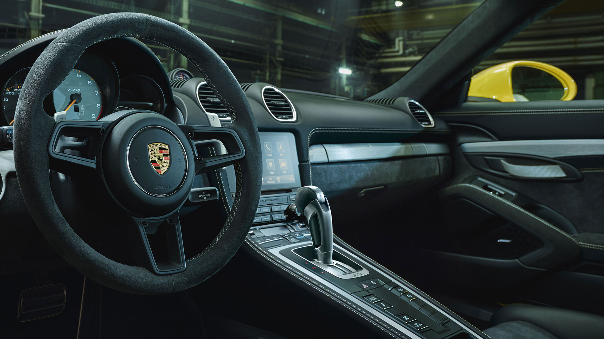

Porsche Cayman GT4 RS

ARTIK DAHA DA GÜÇLÜ
911 GT3 Cup yarış otomobilinde sunulan altı silindirli motor, spor otomobilin en önemli parçasını oluşturuyor. Motor devri 9.000 rpm'ye kadar çıkıyor. 6.000 rpm’de 465 NM tork değerine ulaşıyor. 718 Cayman GT4 ile karşılaştırıldığında, 718 Cayman GT4 RS ekstra 80 PS güç üreterek 2,83 kg/PS seviyesinde bir ağırlık-güç oranı yakalıyor.
SIFIRDAN 100’E 3,4 SANİYE
718 Cayman GT4 RS 0'dan 100 km/sa hıza yalnızca 3,4 saniyede (PDK'lı GT4: 3,9 saniye) çıkıyor ve yedinci viteste 315 km/sa azami hıza (PDK'lı GT4: 302 km/s) ulaşıyor. Kaput ve ön kanatlar gibi bileşenlerde karbon fiber takviyeli plastik (CFRP) kullanımı sayesinde ağırlık azaltılıyor. Hafif halıların
yanı sıra yalıtım malzemesinin azaltılması da ağırlığın azaltılmasına katkı sağlıyor. Arka cam daha hafif bir malzemeden imal edilmiş.
YARIŞ OTOMOBİLLERİNDEN GÜNLÜK KULLANIMA
Yeni sabit arka kanat, kuğu boynu eklentisi ve alüminyum kanat destekleri dış tasarımın ayırt edici unsurları arasında yer alıyor. Porsche 911 RSR GT yarış otomobilinden esinlenilerek tasarlanan bu yüksek verimli kanat ilk olarak 911 GT3’le bir Porsche seri üretim otomobilinde kullanılmaya başlanmıştı